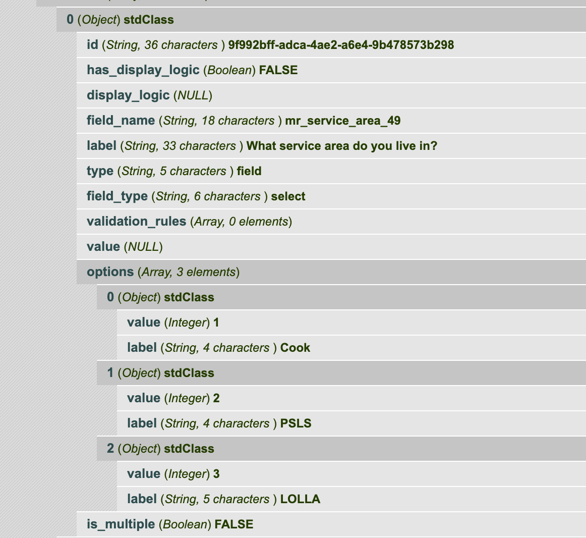
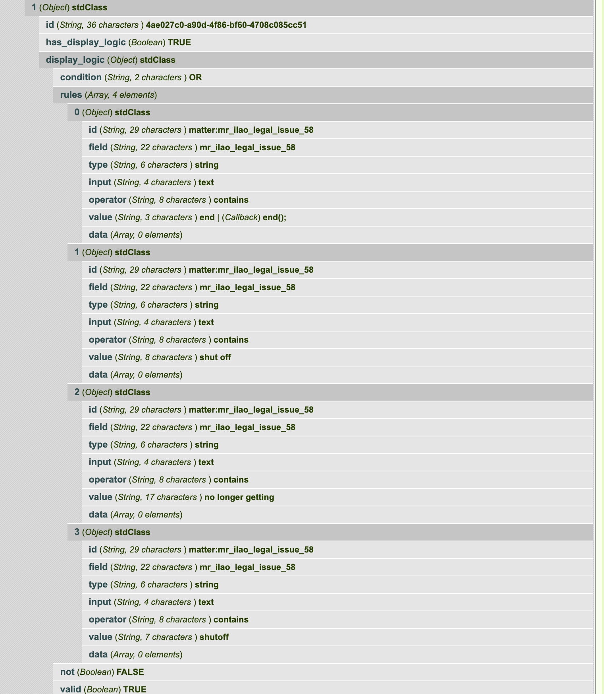

Guided Navigation Forms
Understanding the Guided Navigation form object
Each form has:
a unique ID associated with it that appears to change with each invocation.
a set of elements that define the form
an array of validation errors
a boolean of is_complete. When is_complete is TRUE, we’ve reached the end of the dialogue.
a boolean of should_show_previous. When TRUE, we can allow the user to go back a form page.
Elements
The heart of the form is the elements.
Every (form) element has:
a unique id
a boolean to indicate whether there display logic.
display_logic, which has data when has_display_logic is TRUE.
a type. Known supported types are field, headline
Fields
Known supported field types are select, text, bool, date.
Form fields will have: * a field_type which indicates the type of field * a value field * validation_rules as an array, when the field has validation rules. * a value. This may be pre-filled with a default value from Guided Navigation.
Select
A select field will have:
a field_type of select
an array of options. Each option is an object with a value and a label. The label is shown to the user while the value is stored and shared back to Guided Navigation.
a boolean of is_multiple. When this is true, the field is a multiselect and/or checkboxes. When the value is false, the field is a single select or radio buttons.
a value. This may be pre-filled with a default value from Guided Navigation.
Text
a field_type of text
Bool
a field_type of bool
no options; these should be Yes, No with values of t and f
Date
a field_type of date
should require a valid date of mm/dd/yyyy or yyyy-dd-mm (or parse together a valid date).
Non-field Elements
Instructions
Instructions will have:
a type of “instructions”
an html_value
may have display logic
Headline
A headline is just HTMl-formatted text. A headline will have:
a type of headline
an html_value
may have display logic
Display logic
When the element’s has_display_logic is true, the display_logic property will have data. There are two use cases we have to be concerned with:
Display logic dependent on a previous form submission
Display logic dependent on a previous field submission in the current form.
The display_logic property will be an object with: * a condition property. Expected values are AND, OR. When there are multiple rules, this condition sits between them * a rules property. This is an array of rules to test for * a not boolean. When this is true, the rules should be tested as NOT. * a valid boolean. It is unclear what the purpose of this is.
Rules
Rules is an array that contains the conditions to test against. Each element in the array contains an object with:
an id
field, which represents the field to test against. This can be found in the profile from Guided Navigation for a particular session
type (known types: string)
input
operator. Known types are contains, not_contains, equal, not_equal, begins_with, in, is_empty, is_not_empty,
value. This is either a string (for contains, not contains) or an array of values (for in operators)
data. For in operators, this is the data to test against.
In the above, the element would display if the field mr_service_area_49 had a value IN (1)
In the above, the element would display if the mr_ilao_legal_issue_58 had a value that contains ‘end’ OR’shut_off’ OR ‘no longer getting’ OR ‘shutoff’
Validation Rules
Validation rules for an element, if not empty, is an array of rules.
Each element is an object with a proprety of type. A type of required is the most common and indicates that a form element should be required.